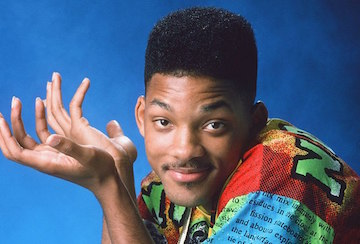

An interstingly boring story about that one person from Philidelphia.
One kid's life was changed, flip-turned upside down if you will, in one day. You just sit there while I tell the story of one guy's journey to royalty.
Will was born in west Philidelphia. As a young kid, he spent most of his time on the playground. One summer, he was playing basketball with some of his friends. His team was winning! On the final shot, Will shoots, and the ball hits the basket, and rolls out, heading straight for the gang of kids on the other side of the court! Oh no!
These guys were'nt too happy with this interuption, and poor Will comes home with a black eye.
She got so scared for her only son, she decided to send him to his anut and uncle's house in California.
Will did't want to go. He begged and pleaded with his mom. He didn't want to leave all his friends to live with family he barely knew, but she wouldn't relent. He even tried not packing his suitcase-- if he wasn't packed, he couldn't leave, right? But she packed his bags for him and sent him on his way.
When he got to the airport, he found out he was in first class-- he could get used to this! He got to drink orange juice from a champagne glass, and be a classy person. Then he started thinking-- never a good sign. He thought, "I don't think I'll like these people, they're all prissy and stuck up. What am I doing here?" But he was just going to have to wait and see, and hope that his family was ready for the fresh prince of Bel-Air.
He landed, and there was some guy waiting with his name on a piece of paper. Will didn't like that he looked like a cop, so he decided to find his own way to his aunt and uncle's house.
He wistled for a cab, and it seemed to be a pretty rare cab, indeed. The license plate said "FRESH" and there were dice hanging on the mirror. Will told the cabbie to go to Bel-Air.
Will finally got there, at about 7:30. He got out of the cab and shouted "Smell ya later" as the cab pulled out of the driveway. He looked at his kigndom, and thought "I'm finally here, to sit on my throne as the Prince of Bel-Air."